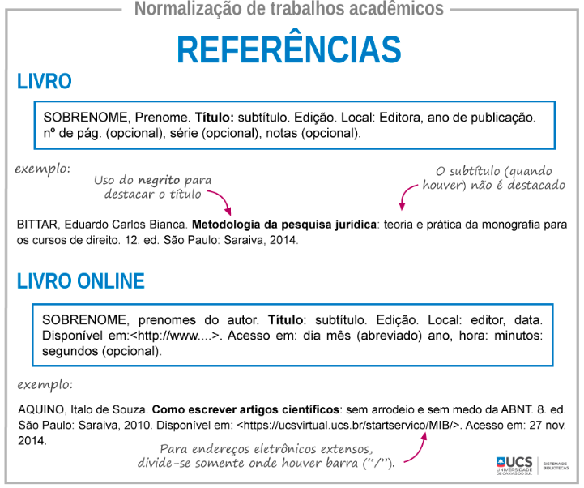

O que é pesquisa explicativa?
A pesquisa explicativa é a que mais aprofunda o conhecimento da realidade, por ter como finalidade explicar a razão e o porquê das coisas.
A pesquisa explicativa, como o próprio nome indica, busca ir além da mera descrição e compreensão de um fenômeno, desvendando suas raízes e as relações de causa e efeito que o sustentam. Ela se propõe a responder perguntas como: por que isso acontece? Quais fatores contribuem para esse resultado? como uma variável influencia a outra?
Tipos de pesquisa explicativa
Características:
- Discussão em grupo: Um moderador conduz uma conversa entre um pequeno grupo de participantes sobre um tema específico.
- Pesquisa qualitativa: O objetivo é compreender as experiências, opiniões e percepções dos participantes, e não apenas medir dados estatísticos.
- Foco em um tema específico: A discussão gira em torno de um tema pré-determinado e relevante para o projeto de pesquisa.
- Dados ricos: As interações do grupo podem revelar insights mais profundos do que entrevistas individuais.
- Novas perspectivas: Os participantes podem construir sobre as ideias uns dos outros e desafiar suposições.
- Pesquisa exploratória: Os grupos focais são úteis para investigações iniciais de um tema.
O levantamento bibliográfico é normalmente feito a partir da análise de fontes secundárias. Estas abordam, de diferentes maneiras, o tema escolhido para estudo. As fontes podem ser livros, artigos, documentos monográficos, periódicos (jornais, revistas, etc), textos disponíveis em sites confiáveis, entre outros locais que apresentam um conteúdo documentado.

Qual é o objeto de um estudo de caso? É qualquer unidade individual. Pode ser uma pessoa, um grupo, uma comunidade, uma organização, enfim. Os estudos de caso estudam casos concretos e contemporâneos. Por esse motivo, o pesquisador não tem controle sobre os eventos.
Qual a sua funcionalidade? A função do estudo de caso é mais clara em situações em que se quer utilizar um exemplo real para explicar uma teoria ou quando se quer compreender as causas de algum fenômeno. À primeira vista, os estudos de caso servem como modelos referenciais. Ainda que cada caso tenha sua particularidade, as pesquisas partem de um modelo, que vão servir de referência para as conclusões.
Características da pesquisa explicativa
Objetivos
- Exploração de relações causais: identificar as causas e os fatores que influenciam um determinado fenômeno.
- Formulação de hipóteses: propor explicações plausíveis para o fenômeno em estudo.
- Teste e validação de hipóteses: verificar se as hipóteses formuladas são comprovadas ou refutadas pelos dados coletados.
- Geração de conhecimento científico: contribuir para a compreensão mais profunda do fenômeno e para o desenvolvimento de teorias e modelos explicativos.
Metodologia
-
Ênfase em métodos quantitativos:
- Experimentos: testar relações de causa e efeito em ambientes controlados.
- Análise estatística de dados: identificar correlações e determinar relações causais.
- Modelagem matemática: representar matematicamente as relações entre as variáveis.
- Estudos de caso: análise aprofundada de um caso particular para entender suas características e relações internas.
- Análise documental: análise de documentos e registros históricos para compreender o contexto e as origens do fenômeno.
Utilização de métodos qualitativos:
Limitações e desafios
- Dificuldade em estabelecer relações causais: nem sempre é possível determinar com total certeza a causa de um determinado fenômeno.
- Complexidade da coleta e análise de dados: pesquisas explicativas geralmente demandam tempo, recursos e expertise.
- Influência de fatores externos: resultados podem ser influenciados por variáveis não controladas.
Poderosa para
- Obter respostas precisas e confiáveis sobre os mecanismos que sustentam os fenômenos.
- Desenvolver teorias e modelos explicativos que contribuem para o avanço do conhecimento científico.
- Embasar decisões e políticas públicas com base em evidências e não apenas em suposições.
Conclusão
Compreensão Aprofundada
- A pesquisa explicativa proporciona uma análise detalhada das causas e relações subjacentes ao fenômeno em estudo.
- Através da investigação rigorosa e da aplicação de métodos científicos, obtém-se um conhecimento mais abrangente e preciso do objeto de estudo.
- A pesquisa contribui para a construção de um corpo teórico mais sólido sobre o tema, elucidando as variáveis envolvidas e suas interconexões.
Formulação de Explicações
- A pesquisa identifica e testa hipóteses sobre as causas e relações entre as variáveis do estudo.
- As análises e interpretações dos dados permitem formular explicações plausíveis e consistentes para o fenômeno em questão.
- A pesquisa contribui para a generalização dos resultados, possibilitando a formulação de leis e princípios que podem ser aplicados a outros contextos.
Relevância
- Os resultados da pesquisa oferecem insights valiosos para a prática profissional em diversas áreas, como educação, saúde, administração e políticas públicas.
- As explicações e generalizações obtidas podem ser utilizadas para embasar decisões mais eficazes e promover intervenções mais impactantes na realidade.
- A pesquisa contribui para o desenvolvimento de soluções inovadoras para problemas sociais e organizacionais.
Limitações e Sugestões
- A pesquisa reconhece as suas limitações, como a generalização dos resultados, a influência de fatores externos e a necessidade de replicação em outros contextos.
- A partir das conclusões e da análise crítica, são sugeridas novas pesquisas que aprofundem o conhecimento sobre o tema e explorem diferentes perspectivas.
- A pesquisa incentiva o diálogo entre diferentes áreas do conhecimento para a construção de uma compreensão mais holística dos fenômenos sociais.